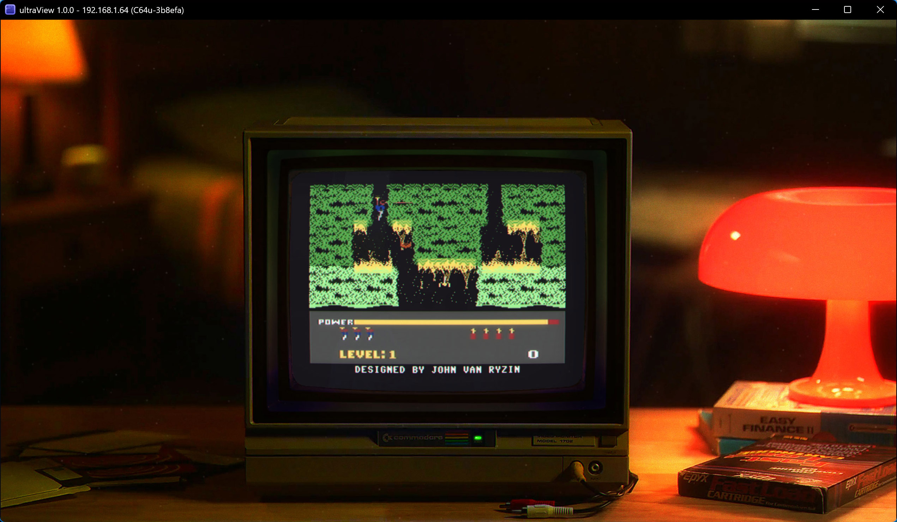

Your C64 Ultimate,
on a proper CRT
ultraView picks up the video and audio streams of your C64 Ultimate and puts them on a simulated CRT that gets PAL and NTSC right. Browse your games, upload a CRT or PRG, play.
Free and open source. Needs a C64 Ultimate on your network. What's new
Screenshot
H.E.R.O. on a 1702
